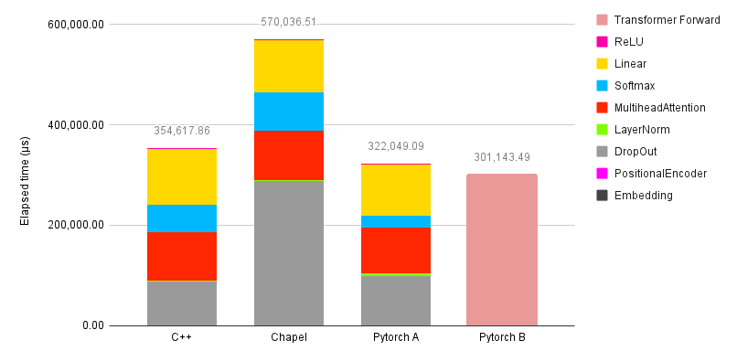
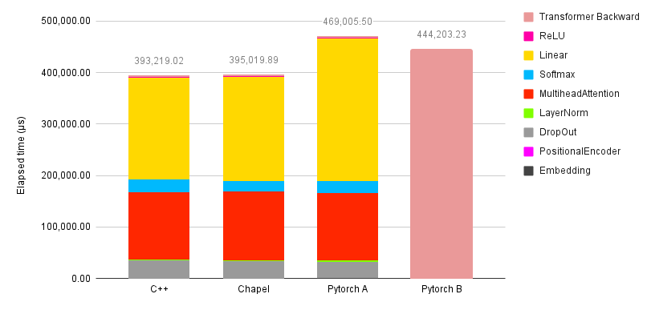
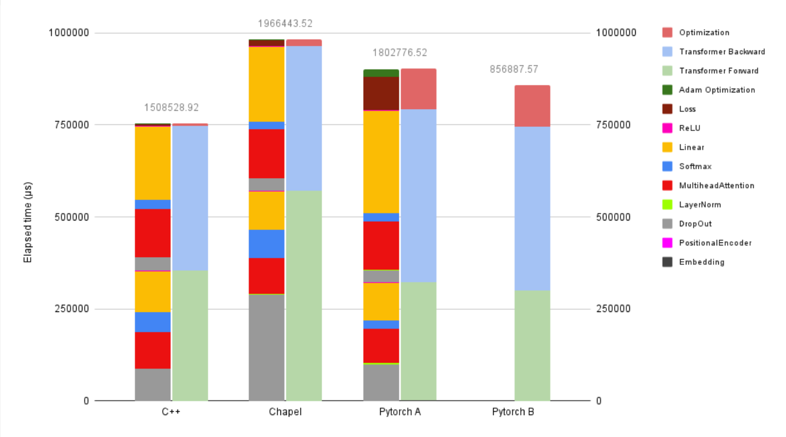

Introduction
As I finished the third year of my bachelor’s degree at Chulalongkorn University, I got an internship opportunity at the University of Tokyo under the supervision of Professor Kenjiro Taura. There, I learned about Chapel and completed this project comparing the achieved performance of Chapel against C++ by implementing a transformer model from scratch. As Chapel is a programming language designed for High Performance Computing, and at the same time the transformer model—which is driving current AI—heavily relies on computational power, I saw this as a great project to work on.
In this blog series, I present my implementation of the Transformer model from scratch in both C++ and Chapel, along with performance comparisons of the two versions on single-threaded and multi-threaded CPUs. I also discuss various performance challenges I encountered and the optimizations I applied in both C++ and Chapel
This blog is divided into two parts: the first part, presented here, discusses the experimental methodology and the first test, using a small-size model on a single thread; while the second part focuses on the second test, a full-size model on single and multiple threads, along with a discussion on productivity.
This project was also featured at ChapelCon ’25, which you can watch on YouTube, though that version was less detailed and updated compared to this blog.
Methodology
This project compared four implementation versions on both single-threaded and multi-threaded setups. The four versions were C++, Chapel, and two versions of Python using PyTorch that differed in the implementation of the transformer layer. The C++ and Chapel versions were implemented from scratch, while the Python version was taken from this GitHub repository. This version was then split into two: one was the original, and in the other, the transformer layer was replaced with torch.nn.tranformer from PyTorch. The implementations of all versions can be obtained from this GitHub link. Both the C++ and Chapel implementations were tested with generated test cases from the PyTorch versions, ensuring numerical correctness of each layer. Additionally, the Chapel and C++ implementations were very similar; all variables could be mapped from one to the other.
The main focus of this project is to compare the achievable performance in training a transformer model using C++ and Chapel. However, having two additional Python implementations that use PyTorch as their backbone, representing existing well-known frameworks, allowed the results to be contextualized with these as references.
All versions were tested on two tests. The first test, discussed in this post, was conducted on Machine A using a small-size model configuration on a single thread only. The second test, discussed in the next post in this series, was conducted on Machine B using a full-size model configuration on both single and multiple threads.
Click here to view the details of the test machines and configurations
Environment
Machine A
- CPU: AMD Ryzen 7 4800H with Radeon Graphics
- RAM: 6.67 GB
- Clang: Ubuntu clang version 19.1.1 (1ubuntu1)
Target: x86_64-pc-linux-gnu
Thread model: posix - Chapel: chpl version 2.4.0
built with LLVM version 19.1.1
available LLVM targets: xtensa, m68k, xcore, x86-64, x86, wasm64, wasm32, ve, systemz, sparcel, sparcv9, sparc, riscv64, riscv32, ppc64le, ppc64, ppc32le, ppc32, nvptx64, nvptx, msp430, mips64el, mips64, mipsel, mips, loongarch64, loongarch32, lanai, hexagon, bpfeb, bpfel, bpf, avr, thumbeb, thumb, armeb, arm, amdgcn, r600, aarch64_32, aarch64_be, aarch64, arm64_32, arm64 - Python: Python 3.11.13
PyTorch: 2.3.0
Numpy: 2.3.0
Machine B
- CPU: Intel(R) Xeon Phi(TM) CPU 7250 @ 1.40GHz
- RAM: 204.45 GB
- Clang: clang version 19.1.3
Target: x86_64-unknown-linux-gnu
Thread model: posix - Chapel: chpl version 2.4.0
built with LLVM version 19.1.3
available LLVM targets: amdgcn, r600, nvptx64, nvptx, aarch64_32, aarch64_be, aarch64, arm64_32, arm64, x86-64, x86 - Python: Python 3.11.13
PyTorch: 2.5.1
Numpy: 2.0.1
Configuration
Compiler flags
- Chapel:
chpl ./file.chpl --fast --no-ieee-float - C++:
clang++ ./file.cpp -O3 --std=c++20 -fopenmp -funroll-loops -ftree-vectorize -mavx2 -msse -ffast-math -march=native -fveclib=libmvec - Python:
python ./file.py
Model
| Parameter | Small Size | Full Size | Meaning |
|---|---|---|---|
| dModel | 32 | 512 | Dimension of embedding layer of the encoder and decoder |
| sequenceLength | 128 | 256 | Maximum length of input seqeuence |
| dFF | 256 | 2048 | Dimension of the feed-forward layer inside the encoder and decoder |
| N | 6 | 6 | Number of transformer encoder, decoder layers (stacked) |
| head | 8 | 8 | Number of attention heads in multi-head attention layer |
| srcVocab | 15700 | 15700 | Size of source vocabulary (number of unique tokens) |
| tgtVocab | 22470 | 22470 | Size of target vocabulary |
(note that the model uses 32-bit floating point values)
Machine A (AMD Ryzen) facilitated easy inspection of the compiled code thanks to the perf command and having super-user access, allowing bottlenecks to be identified easily, while Machine B (Xeon Phi) did not. On the other hand, Machine A had a limited memory of 6.67 GB and was incapable of running the full-size model, whereas Machine B had 204.45 GB, allowing the full-size model to be run.
In order to measure the time required by each layer, timers were inserted into all layers. The model was then run on the Italian-English machine translation task, with the dataset obtained from opus_books (Hugging Face link). The model was executed for 500 and 40 iterations on Machines A and B, respectively. The timing results of each iteration for each layer were gathered and sorted; the fastest and slowest 10% of iterations were removed, and the mean and standard deviation were computed.
Small-Size Model on a Single Thread
In this experiment, I tested the small version of the model on Machine A. With this version, I was able to continuously inspect each part of the compiled program using the perf command and optimize the slow parts. The models were run for 500 iterations, and the mean and standard deviation were collected as described in the methodology section. The detailed results can be viewed in this Google Spreadsheet, and the single-threaded implementation is available at this GitHub link
Forward Pass Results

Figure 1. Time spent on each layer (in microseconds) during a single forward-pass training iteration for each model, tested on Machine A (single-threaded) using the small model configuration.
Since inserting timers into each layer of the transformer layer (torch.nn.transformer) in the PyTorch B model was difficult—because some layers, such as Softmax and ReLU, are function calls embedded between layers, preventing flexible placement of timer checkpoints—the detailed data for individual layers is missing. Therefore, only C++, Chapel, and PyTorch A’s individual layer elapsed times can be shown. This also applies to the other sections.
According to Figure 1, most layers in Chapel performed as well as those in C++ and PyTorch A. Some layers even performed better, while only a few, such as Softmax and Dropout, performed worse. The poor performance of the Dropout layer is primarily due to the inefficiency of the random number generator (randomstream.fill()). I will discuss the performance issues of these layers in the next section.
You might expect the Linear and Multi-Headed Attention layers to dominate the execution time. While this is true for a larger model, in this small version, the execution time of these layers did not contribute as much. Additionally, the PyTorch version might be expected to be significantly faster than the C++ and Chapel versions, as it is equipped with optimized linear algebra libraries. However, since this is a small-size model, the execution time of the Linear and Multi-Headed Attention layers did not dominate, and the matrix sizes were not very large. As a result, the performance of all versions was comparable.
Backward Pass Results

Figure 2. Time spent on each layer (in microseconds) during a single backward-pass training iteration for each model, tested on Machine A (single-threaded) using the small model configuration.
As for the backward pass, Figure 2 shows that, overall, C++ and Chapel performed better than both Python versions. it also shows that Chapel could achieve relatively the same performance as C++, resulting in the total backward-pass time of Chapel and C++ in this configuration to be almost the same.
Overall Results

Figure 3. Time spent on each layer (in microseconds) per training iteration (including forward, backward, and update) for each model, tested on Machine A (single-threaded) using the small model configuration.
Figure 3 shows the total time required for each training iteration, including the forward pass, backward pass, loss computation, and optimization. It can be seen that the Chapel version was slower than the others, primarily because the Softmax and Dropout layers were slower in the forward pass, while the other layers performed comparably. Since this was the small version of the model, the advantage of using PyTorch’s optimized linear algebra modules did not significantly manifest here, causing the performance to be comparable with C++ and Chapel. This advantage, however, will become more apparent in the results of the full-size model experiment on Machine B.
Discussion: Small-Size Model Performance
Throughout the implementation process, I encountered and resolved many interesting performance issues and gained valuable insights. I will discuss them in this section.
Matrix Representation
This is the most critical building block of the model. In C++, I created a Tensor class to store the data and a TensorView class to capture a portion of the tensor when performing calculations.
class Tensor {
Tensor(int row, int column) {data = new float[row * column];}
~Tensor() {delete[] data;}
float* data;
};
class TensorView {
TensorView(Tensor& t) {data = t.data;}
~TensorView() {/*do nothing*/}
float* data;
};
The Chapel version, however, uses an alternative approach. It uses built-in arrays to represent all matrices and tensors. Unlike C++, ref fields are not currently supported in a class or record, so a TensorView-like structure in Chapel cannot be constructed:
class TensorView {
ref data; // error: References cannot be members of classes or records yet.
}
I see this as a feature that would be beneficial to implement in the future.
Another interesting design choice I made is to use a 1D array instead of a multidimensional array to represent each matrix and tensor. In an earlier draft, I initially used a multidimensional array with the LinearAlgebra module. However, I found its performance to be significantly worse than expected. Upon inspecting the compiler-generated code, I discovered that iterating over elements in a multidimensional array invoked advance_chpl, a function that retrieves the next item in an array, which introduced considerable overhead and prevented vectorization. This issue had already been reported in a GitHub issue titled “Multidimensional zippered iteration (or promotion) kills performance” and has been noted as a known performance concern on the Chapel website.
Although this could be mitigated by iterating over the array’s domain instead of its elements, I was still afraid that doing so might introduce unknown performance issues with multidimensional arrays in the future. For these reasons, I decided to use the 1D array design, which is one of the methods suggested in the “Optimizing Performance of Chapel Programs” documentation.
I also experimented with nested arrays, such as var arr: [0..#N][0..#N] real(32). This approach yielded better performance than the 2D version, as the compiler treated it as a 1D array of 1D arrays. However, this made the array non-contiguous in memory, as each row is not guaranteed to be contiguous with the others, effectively equivalent to a float** in C++. As a result, it was still less efficient than using a pure 1D array.
Matrix Multiplication
The algorithm used for matrix multiplication is blocked matrix multiplication, in which the operation is divided into smaller blocks to exploit cache locality. A block size of 6464 was chosen, as it provided the best performance in my environment. Both the C++ and Chapel versions use the same algorithm and block size.
After some tests, Chapel outperformed C++ for certain matrix sizes and underperformed for others, even though the compiler-generated code was nearly identical. This caused the performance of the linear layer, when tested on the full-size model, to be faster in Chapel than in C++. The cause of this variation remains unknown to me.
Matrix Operations
This section discusses general operations such as element-wise multiplication, addition, division, etc. As I wanted to have control over parallelism, there were several candidate designs, including overloading the array operators like +, -, *, and / or creating new functions for these operations. As I experimented with performance, I found that the design and implementation of these operations had a greater impact on the model than I had expected. Therefore, I tested five versions of the sum-reduction function used in LayerNorm to calculate the mean. (However, the implementation of LayerNorm that used this function was later changed to be similar to the C++ version).
// query the domain from the array argument
proc PlusReduce1(ref A: [?D] real(32), out output: real(32)) {
output = 0.0;
for i in D {
output += A[i];
}
}
// pass the domain explicitly
proc PlusReduce2(D: domain(1), ref A: [] real(32), out output: real(32)) {
output = 0.0;
for i in D {
output += A[i];
}
}
// pass the starting and ending points explicitly
proc PlusReduce3(in start: int, in count: int, ref A: [] real(32), out output: real(32)) {
output = 0.0;
for i in start..#count {
output += A[i];
}
}
// use a + reduce expression
proc PlusReduce4(ref A: [?D] real(32), out output real(32)) {
output = + reduce(A);
}
// [note:Note that while this overload is
identical to Chapel’s built-in
+ operator on arrays, in my work
I actually wanted more control
over the parallelism, so the body
was more complicated than shown here,
simplified for the purposes of
this discussion.]
operator +=(ref sum: real(32), ref A: [] real(32)) {
var output: real(32) = 0.0;
for i in A.domain {
output += A[i];
}
sum = output;
}
After benchmarking on small arrays, the first method was the slowest, followed by the second, while the third was the fastest. The other methods produced similar compiler-generated code and performed comparably to the first, with the fourth method creating a Chapel task when invoked, introducing additional overhead. Therefore, we will focus on comparing only the first three methods.
After completing this project, I reported my findings on a GitHub issue titled “Different implementations of the same function cause different performance”, where the discussion clearly revealed the causes of the observed performance differences.
In short, the primary performance bottleneck stems from the overhead of passing arguments. The first method creates an array view, introducing considerable overhead compared to the others, while the second method incurs overhead due to requiring a domain. The third method, in contrast, requires almost no overhead, making it the fastest. These costs are especially noticeable when operating on small arrays. Nevertheless, for large arrays, the overhead becomes negligible, resulting in similar performance. It is also worth noting that passing a range instead of a domain yields performance comparable to the third method, since the overhead of passing a range is minimal compared to that of a domain.
Initially, I carelessly benchmarked only on a small array and mistakenly attributed the performance differences among the three methods to missed opportunities for vectorization. This occurred because the compiler generated different code for each function based on what it could determine at compile time. For example, the third method could detect fixed start and end points, allowing full unrolling for small arrays, while the first method could not, producing general code applicable to any size. C++ exhibited the same effect, as it reflects LLVM’s optimization choices. Nevertheless, this was not the primary cause of the observed performance differences.
As I didn’t notice this until I finished the project, I chose the third design, passing the array with start and end points manually, as it gives the best performance result. I also want to point out that another reason I didn’t choose overloading the operator, even though it enables much cleaner code, is that it requires additional memory allocation or copying in expressions that have three or more operands such as C = A + B; it costs unnecessary additional execution time, both in Chapel and C++.
operator +(ref A: [] real(32), ref B: [] real(32)) {
var C: [A.domain] real(32); // allocation
for i in A.domain {
C[i] = A[i] + B[i];
}
return C; // copy
}
Softmax
This is a critical layer, as it is significantly slower in both versions compared to PyTorch, with Chapel being the slowest. I do not know the reason behind the slowness of the C++ version, as it is slower than both of the Python versions, but I understand why it performs better than the Chapel version. The Chapel version refuses to use _ZGVdN8v_expf_avx2, the vectorized exponential function in the GNU C Library, in exponential computation, while the C++ version uses the function (clang requires the -fveclib=libmvec flag to enable _ZGVdN8v_expf_avx2). I have tried many methods to enable it in Chapel, such as iterating with simple for or foreach loops, switching from real(32) to real(64), using direct assignments like B = exp(A), passing the same compilation flags used in clang via --ccflag, and many more, but none of these attempts succeeded.
However, this issue has been resolved in modern Chapel (version 2.7), which introduces the new compiler flag --vector-library. Setting it to LIBMVEC-X86 for the llvm target compiler (or libmvec for clang) produces the same effect as specifying -fveclib in clang.
DropOut
This is another layer that performed significantly worse in Chapel. The random number generator I used in the Chapel version is from the Random standard module. As for the C++ version, I tried to implement the same random algorithm, pcg_setseq_64_xsh_rr_32. I also used integer-based random generation with an integer threshold, which is 4–5 times faster than using floating-point numbers.
It also appeared that using rng.fill is faster than using rng.next when iterating over an array. Since this function forces parallelism when available, CHPL_RT_NUM_THREADS_PER_LOCALE=1 must be set accordingly when experimenting with a single thread.
This layer in Chapel is significantly slower compared to those in other models, primarily due to the random number generator. Using the random function with bounds caused a significant performance drop. After removing the bounds, Chapel achieved performance comparable to the C++ version. I reported and discussed this issue on a GitHub issue titled “Random with bounds is much slower than no bound”. However, since I only noticed and reported it after completing the project, I did not resolve it.
Multihead Attention
This layer consumes the most resources and plays a major role in the model. In this layer, I designed the process to avoid explicitly transposing any matrix and instead utilized specialized matrix multiplication functions for transposed operations, such as MatMulPlusATB, which performs C += dot(A.T,B)
The performance issue I found in this layer was interesting. While the forward process of both versions performed as expected, the backward pass of the Chapel version initially performed very poorly. After some investigation, I discovered that in the final step, where the weight gradients of Q, K, and V are computed along with the gradient for the next layer, the matrix multiplication was performing poorly because the compiler refused to fully vectorize it. Instead, the loop was heavily unrolled without any vectorization.
proc backward(/*...*/) {
// ...
// These matrix multiplications are slow
for i in 0..#batch {
MatMulPlusAB(dModel, sequenceLength, dModel, QTGradient[(i * block)..#block], inputQ[(i * block)..#block], WQOpt.gradient);
MatMulPlusAB(dModel, sequenceLength, dModel, KTGradient[(i * block)..#block], inputK[(i * block)..#block], WKOpt.gradient);
MatMulPlusAB(dModel, sequenceLength, dModel, VTGradient[(i * block)..#block], inputV[(i * block)..#block], WVOpt.gradient);
}
for i in 0..#batch {
MatMulPlusATB(sequenceLength, dModel, dModel, QTGradient[(i * block)..#block], WQ, inputGradientQ[(i * block)..#block]);
MatMulPlusATB(sequenceLength, dModel, dModel, KTGradient[(i * block)..#block], WK, inputGradientK[(i * block)..#block]);
MatMulPlusATB(sequenceLength, dModel, dModel, VTGradient[(i * block)..#block], WV, inputGradientV[(i * block)..#block]);
}
}
Surprisingly, this issue was resolved by altering some code in the Config file, which is a Chapel file that defines values known at compile time, such as model dimension, sequence length, matrix multiplication block size, etc. Since these values are known at compile time, the param keyword was initially used. However, when I changed from param to var, loosening the variable restriction, the issue in multi-head attention vanished.
// ...
config /*param*/ var dModel: int = 32;
config /*param*/ var head: int = 8;
config /*param*/ var sequenceLength: int = 128;
// ...
After the project was done, I investigated this phenomenon further. It turned out that the cause is related to LLVM’s optimization choices. In short, I found that if LLVM notices that a loop runs for a small number of iterations (fewer than 50 on my machine), it chooses loop unrolling instead of vectorization, possibly because the setup cost of vectorization is not worth it. This threshold likely depends on the hardware and may vary across machines.
My blocked matrix multiplication algorithm has its innermost loop run for min(d3, BLOCK_SIZE). In this case, where the model size is small, the dModel value passed to d3 is 32. If dModel is known at compile time (declared as a param), the compiler detects this and chooses loop-unrolling optimization for the innermost loop of the algorithm. On the other hand, when dModel is not known at compile time (declared as a var), the compiler chooses normal vectorized loops for that part. This can also happen in C++ as well, since it also depends on LLVM.
// AB matrix multiplication implementation
// BLOCK_SIZE is 64
proc MatMulPlusAB(in d1: int, in d2: int, in d3: int,
const ref A:[] real(32), const ref B:[] real(32), ref C:[] real(32)) : void {
// Reindex for sliced array
ref Ar = A.reindex(0..#(d1 * d2));
ref Br = B.reindex(0..#(d2 * d3));
ref Cr = C.reindex(0..#(d1 * d3));
for ii in 0..<d1 by BLOCK_SIZE {
for jj in 0..<d3 by BLOCK_SIZE {
for kk in 0..<d2 by BLOCK_SIZE {
var i = 0;
while (i < BLOCK_SIZE && ii + i < d1) {
var k = 0;
while(k < BLOCK_SIZE && kk + k < d2) {
var j = 0;
while(j < BLOCK_SIZE && jj + j < d3) { // The most inner loop
Cr[(ii + i) * d3 + (jj + j)] += Ar[(ii + i) * d2 + (kk + k)] * Br[(kk + k) * d3 + (jj + j)];
j += 1;
}
k += 1;
}
i += 1;
}
}
}
}
}
I didn’t notice this during the project development. Therefore, I solved the problem by changing the param to var in the Config file. Fortunately, this did not negatively affect the performance of the other layers.
ReLU
One issue found in this layer is in the backward process. At first, the backward pass of this layer was implemented in one line.
for i in D {
inputGradient[i] = if input[i] >= 0 then outputGradient[i] else 0.0:real(32);
}
The problem was that the compiler refused to use a vectorized movemask optimization and instead used a compare-and-jump approach. This was resolved by splitting the loop into two sections:
for i in D {
outputGradient[i] = if input[i] >= 0 then outputGradient[i] else 0.0:real(32);
}
Copy(0,0,D.size,outputGradient,inputGradient);
Having completed this project, I reported and discussed it on a GitHub issue titled “Optimization missed on ternary operator when used with arrays”.. In short, this represents a missed optimization opportunity for the ternary operator. The compiler could have detected the pattern and chosen a compare-and-jump implementation instead of a vectorized movemask or a compare-and-bitwise-AND operation, which not only fails to exploit parallelism but also introduces branch mispredictions. This is likely due to the overhead of Chapel arrays’ metadata, which interferes with the compiler’s pattern detection.
For the forward pass, Chapel achieves better performance than C++ even though the compiled code is nearly identical. However, when tested on the full-size model, a significant performance gap was shown, with Chapel taking more time. Despite this, I tested the function in isolation outside the model and confirmed that both Chapel and C++ perform similarly, regardless of array size. Additionally, the compiler-generated code is very similar, and when I executed the function consecutively within the model, only the first execution after the previous layer incurred a significant performance cost, with Chapel taking noticeably longer. A similar effect is also observed in the backward pass of LayerNorm. At present, I do not fully understand the cause of this behavior.
Other Layers
The other layers seem fine and perform as well as, or better than, the PyTorch version. Moreover, the model optimization part, specifically the loss computation and Adam optimizer, appears to perform much better than in the PyTorch versions.
Conclusion
In this post, we explore the methodology of the experiment and the first test, running a small-size model on a single thread. The performance of the C++ and Chapel models is comparable to that of the two PyTorch models, with the C++ version being the fastest, as the benefits of PyTorch’s optimized linear algebra are not very apparent in this small-scale test. The Chapel version was slowest in this test, mainly due to the Dropout and Softmax layers. Several unexpected performance issues were also encountered, requiring tricky solutions during Chapel’s development.
In the next post in this series, we will explore the second test, using a full-size model on single and multiple threads, along with a discussion on productivity.